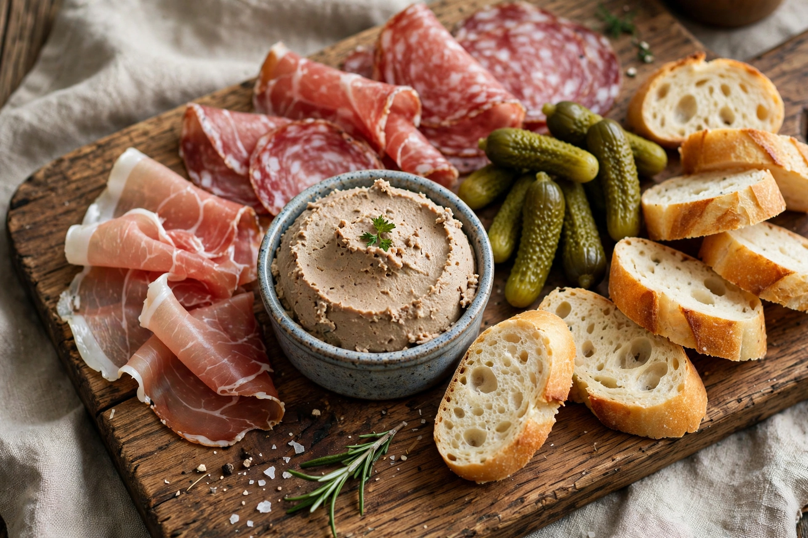

| Origin | France |
|---|---|
| Main ingredients | Pork and other meats, salt, spices |
| Products | Ham, saucisson, pate, terrine, rillettes, confit |
Charcuterie is the French branch of cooking devoted to prepared meat products, chiefly from pork: hams, sausages, pates, terrines, galantines, rillettes and confits.
History
Preserving meat by salting, curing, smoking and confit long predates refrigeration, notably in Roman and medieval Europe. In France charcutiers formed guilds separate from butchers, and the word derives from chair cuite, "cooked flesh".
Techniques
Curing with salt (and historically nitrates/nitrites) inhibits spoilage; forcemeats are seasoned ground mixtures; fermentation and drying produce saucisson sec and similar salami-style products.
Modern use
A "charcuterie board" in contemporary dining assembles cured meats with cheese, bread, pickles and preserves as shared appetisers.